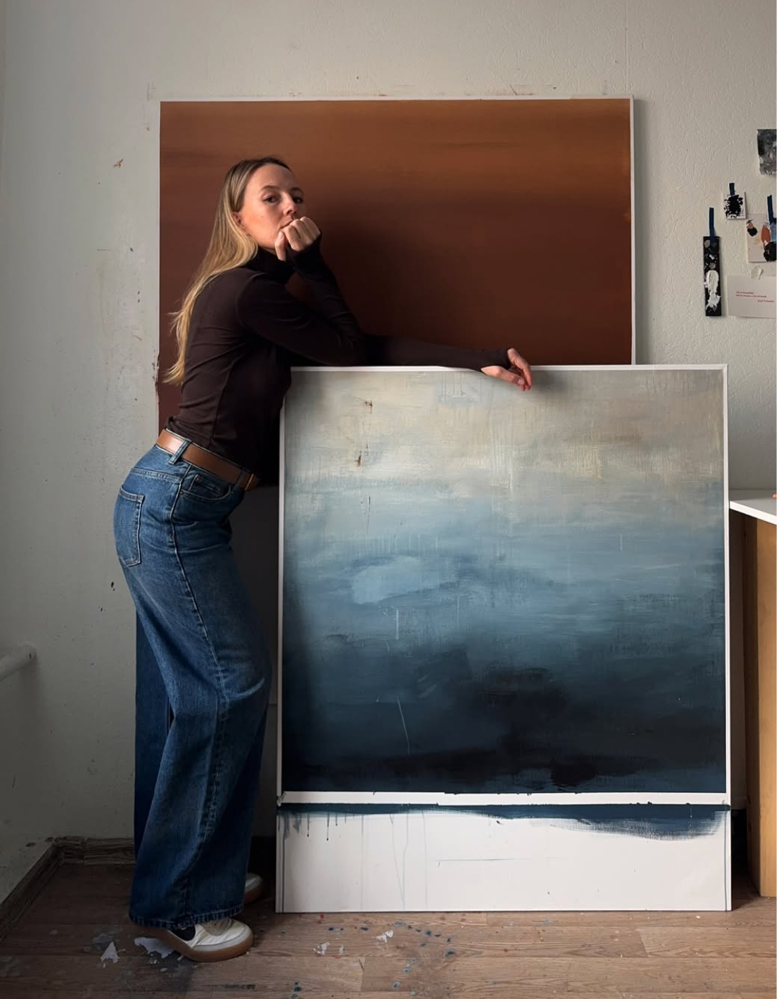
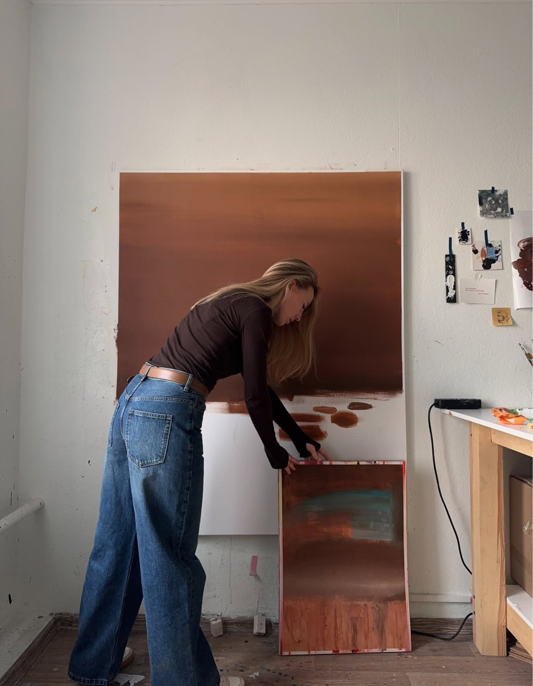

событияВыставки, презентации коллекций, коллаборации, образовательные встречи.
VoloknoЛично у меня ты, как художник, скорее ассоциируешься с черно-белыми решениями или кляйновским синим цветом. Но твоя выставка в Villy Uley — первая с таким большим количеством оттенков за последние 3 года твоей художественной деятельности — от песочного до лавандового. Это ощущается как выход за пределы зоны комфорта?
КристинаЕсли говорить о зоне комфорта, то больше всего меня из неё выбивают публичная деятельность и перформансы. Каждый из них — внутренняя борьба. Но с танцем тоже не то чтобы всё сразу сложилось… Я начинала рисовать движение чуть больше 20 лет назад — моя первая выставка, посвящённая современному танцу, проходила в Новосибирске в 2004 году. Она была вдохновлена спектаклем «Хочу любить» театра танца Вампитер, с Ильёй Беленковым и Сашей Андрияшкиным. С Сашей мы дружим и работаем до сих пор.
В постановке присутствовали жёлтые цветовые акценты, и я использовала их в работах, да и по учёбе параллельно были такие неизбежные фундаментальные дисциплины, как академическая живопись, цветоведение и колористика. Бывает, что цвет и вовсе неизбежен как акцент. Например, когда я делала зарисовки с постановок для Центра Мейерхольда и в спектакле ведущим цветом был красный или жёлтый, безусловно, я не сбрасывала цвет со счетов. Но со временем я пришла к тому, что в моих работах цвет отвлекает.


VoloknoЛично у меня ты, как художник, скорее ассоциируешься с черно-белыми решениями или кляйновским синим цветом. Но твоя выставка в Villy Uley — первая с таким большим количеством оттенков за последние 3 года твоей художественной деятельности — от песочного до лавандового. Это ощущается как выход за пределы зоны комфорта?
КристинаЕсли говорить о зоне комфорта, то больше всего меня из неё выбивают публичная деятельность и перформансы. Каждый из них — внутренняя борьба. Но с танцем тоже не то чтобы всё сразу сложилось… Я начинала рисовать движение чуть больше 20 лет назад — моя первая выставка, посвящённая современному танцу, проходила в Новосибирске в 2004 году. Она была вдохновлена спектаклем «Хочу любить» театра танца Вампитер, с Ильёй Беленковым и Сашей Андрияшкиным. С Сашей мы дружим и работаем до сих пор.
В постановке присутствовали жёлтые цветовые акценты, и я использовала их в работах, да и по учёбе параллельно были такие неизбежные фундаментальные дисциплины, как академическая живопись, цветоведение и колористика. Бывает, что цвет и вовсе неизбежен как акцент. Например, когда я делала зарисовки с постановок для Центра Мейерхольда и в спектакле ведущим цветом был красный или жёлтый, безусловно, я не сбрасывала цвет со счетов. Но со временем я пришла к тому, что в моих работах цвет отвлекает.